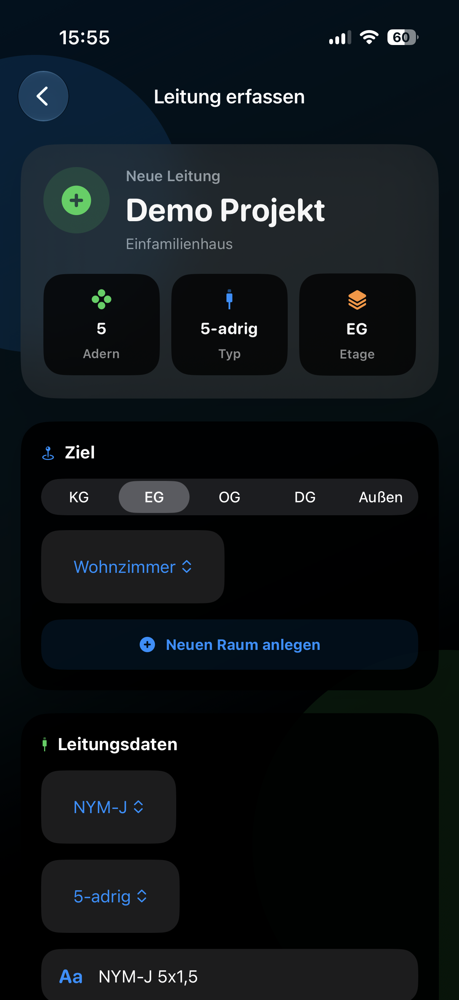
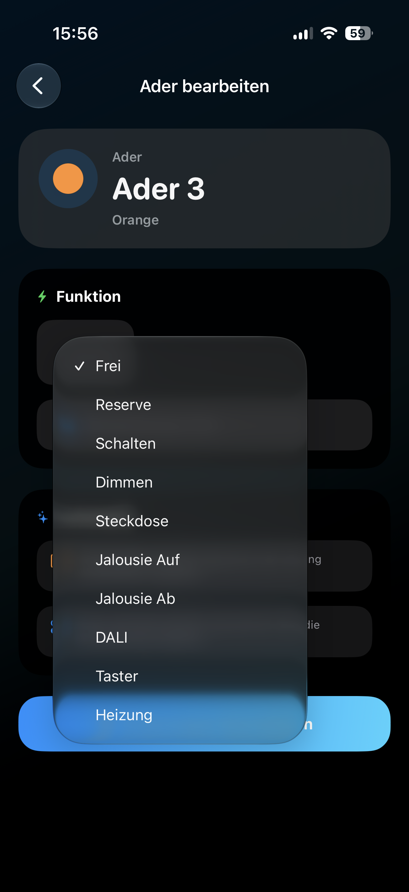
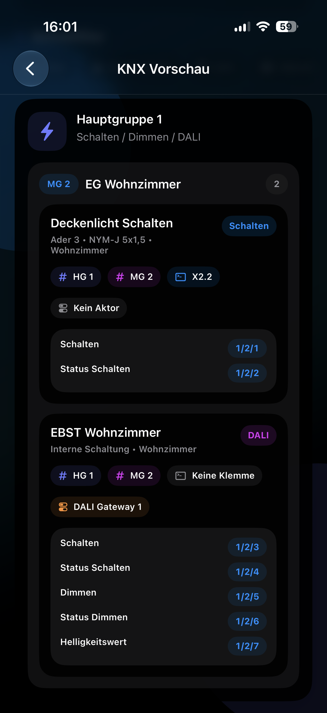

Kabelliste anlegen. KNX-Adressen fertig.
Du legst die Kabelliste sowieso an – WireLogic erzeugt daraus automatisch alle KNX-Gruppenadressen, die Klemmenliste und die fertige Dokumentation. Einmal eingeben. Alles erledigt.

So einfach geht's.
Drei Schritte – und du hast Kabelliste, Klemmenliste und KNX-Adressen komplett fertig.

Leitung erfassen
Kabeltyp, Adern, Raum, Sicherung und Verbraucher direkt auf der Baustelle ins iPhone eingeben. Geht in Sekunden.

Funktion vergeben
Jeder Ader eine Funktion zuweisen: Schalten, Dimmen, Jalousie, Heizung, DALI – WireLogic kennt alle KNX-Typen.

KNX-Adressen fertig
Alle Gruppenadressen werden sofort strukturiert generiert – mit Hauptgruppe, Mittelgruppe, DPT und Bezeichnung. Bereit für den ETS-Import.
Vom Raum bis zum PDF – in unter 60 Sekunden.
Sieh selbst, wie schnell Dokumentation auf der Baustelle entsteht.
So war's vorher.
Kennst du das? WireLogic wurde genau dafür gebaut.
Was früher Nacharbeit war, passiert jetzt automatisch auf der Baustelle.
* Richtwerte aus der Praxis eines Elektrikers
Alles in einer App.
WireLogic verbindet Baustellenerfassung, Elektro-Dokumentation und KNX-Vorbereitung in einem durchgängigen Arbeitsablauf.
Projekte verwalten
Kunden, Bauvorhaben, Orte, Bearbeiter und Projektdaten zentral speichern.
Räume strukturieren
Räume nach Etagen anlegen – daraus entsteht die Gebäudestruktur für die Planung.
Kabelliste erfassen
Kabeltypen, Adern, Funktionen, Sicherungen und Verbraucher direkt vor Ort dokumentieren.
Klemmenliste automatisch
Klemmstellen nach Etage, Raum, Leitung und Aderfunktion werden automatisch erstellt.
KNX-Adressen automatisch
Schalten, Dimmen, Jalousie, Heizung – alle Gruppenadressen entstehen aus der Kabelliste.
PDF & ETS exportieren
PDF-Dokumentation, Projektdatei, WebViewer und ETS-Vorbereitung auf Knopfdruck.

Fertige Projektunterlagen für Kunde, Büro und Baustelle.
Kabellisten, Klemmenlisten, KNX-Daten und Projektinfos werden sauber exportiert – zum Weitergeben an Kunden, Archivieren oder für die nächste Baustelle.
Was Elektriker sagen.
WireLogic wird von Beta-Testern aus der Praxis genutzt und weiterentwickelt.
Entwickelt aus der Praxis.
WireLogic entsteht direkt aus dem Alltag eines Elektrikers – jede Funktion orientiert sich an echten Abläufen auf Baustellen.
Aktuell verfügbar
Projektverwaltung, Raumstruktur, Leitungserfassung, Aderfunktionen, Klemmenliste, KNX-Vorschau, PDF-Export, Projektdatei und WebViewer.
In Entwicklung
Erweiterte Verteilerplanung, Aktorverwaltung, DALI-Ausbau, Firmenkonten, Teamfunktionen, Klemmenfeldplanung und automatische Stromlaufplan-Erzeugung.
WireLogic soll zur intelligenten Plattform für Elektroplanung werden.
Von der Web-Version für Büro und Baustelle bis zum KI-Assistenten mit Sprachsteuerung.
WireLogic für Elektriker, KNX-Programmierer und Elektrobetriebe
WireLogic wurde für Elektriker, KNX-Programmierer, Elektrobetriebe und Elektroplaner entwickelt. Die App unterstützt bei der Erstellung von Kabellisten, Klemmenlisten, KNX-Gruppenadressen, ETS-Vorbereitung und Projektdokumentationen direkt auf der Baustelle.
Durch die einmalige Erfassung von Räumen, Leitungen, Adern und Verbrauchern entstehen automatisch strukturierte Projektunterlagen für Baustelle, Büro und Kunden.